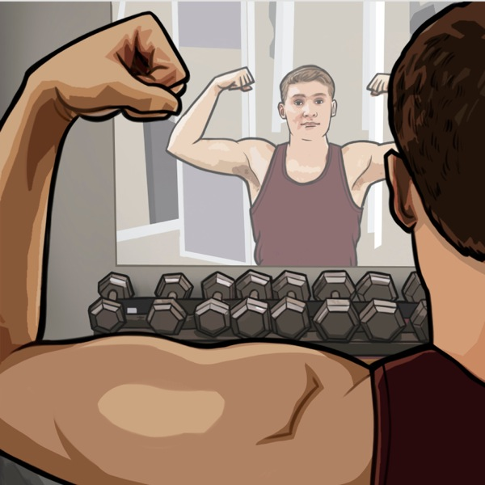

What would you like to change most about your body?
Height
Weight
Body shape
Hair
Complexion
Muscle size
Other
Complete the following sentence.
I feel most insecure about my body . . .
when I get on the scale.
when I look in the mirror.
when I compare myself with others (friends, fashion models, movie stars).
Complete the following sentence.
I weigh myself . . .
daily.
weekly.
less often than once a week.
Which expression best describes your feelings?
Negative body image. (Example: “Every time I look in the mirror, I think that I see an obese, hideous figure. I’ve even starved myself in an effort to lose weight.”—Serena.)
Balanced body image. (Example: “There’s always going to be something we don’t like about our appearance, but some things we just need to accept. It’s silly to be anxious about something we can’t change.”—Natanya.)

The Bible tells us not to think more of ourselves “than it is necessary to think.” (Romans 12:3) So it’s proper—even necessary—to think about yourself to a degree. That’s why, for example, you brush your teeth and give attention to your hygiene.
What, though, if you frequently get discouraged over your body image—perhaps to the point of being obsessed about it? If that’s the case, you might wonder . . .
‘Why do I have a negative body image?’
There could be several reasons. These include:
Influence of the media. “Young people are bombarded with images that make us feel that we have to be superskinny and gorgeous at all times. As a result, if we’re anything less than perfect, we feel disgusting!”—Kellie.
Influence of parents. “I’ve noticed that if a mother is obsessed with her body image, often the daughter views herself the same way. It can be the same with fathers and sons.”—Rita.
Low self-esteem. “People who are obsessed with their body image constantly demand positive reinforcement from others about how they look. It gets tiring to be around that!”—Jeanne.
Regardless of the cause, you might be asking . . .
‘Should I change the way I look?’
Consider what some of your peers say.
“You can’t always change the things you don’t like about yourself, so it’s best to accept your flaws. If you do, other people are less likely to notice them.”—Rori.
“Do what you can to be healthy. If you’re healthy, you’ll look the way you’re supposed to look. And if someone can’t appreciate you for who you are (rather than what you look like), that person isn’t your friend.”—Olivia.
The bottom line: Do what you can to look your best. But don’t worry about the rest. Being overly concerned about how you look can be dangerous. (See “Julia’s Story.”)
On the other hand, a balanced attitude will help you view yourself realistically, as a young woman named Erin learned. “Sure, I have insecurities,” she says, “but I notice that I feel bad only when I focus on the wrong things. Now I just exercise regularly and eat right. The rest falls into place naturally.”
The best makeover ever!
When you have a balanced view of your body image, you will feel (and even look) your best. The Bible can help. It encourages you to cultivate the following:
Contentment. “It’s better to enjoy what we have than to want something else, because that makes no more sense than chasing the wind.”—Ecclesiastes 6:9, Contemporary English Version.
A balanced approach to exercise. “Bodily training is beneficial for a little.”—1 Timothy 4:8.
Inner beauty. “Man sees what appears to the eyes; but as for Jehovah, he sees what the heart is.”—1 Samuel 16:7.
“Our face shows how we feel about ourself. If a person is content, others can see that and they are automatically drawn to that person.”—Sarah.
“Prettiness can get quick attention. But who you are on the inside and your good qualities are what people will remember about you the most.”—Phylicia.